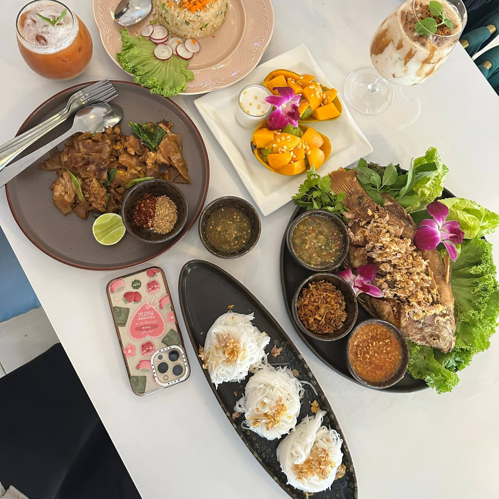
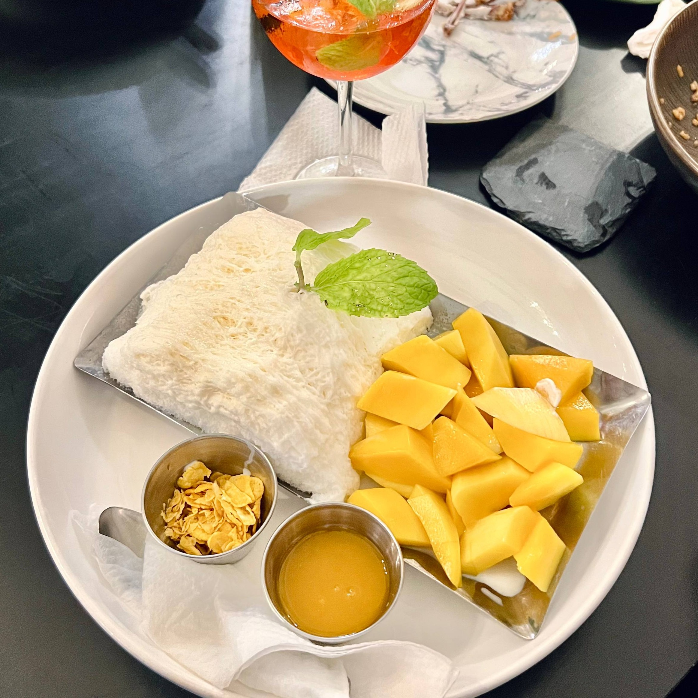
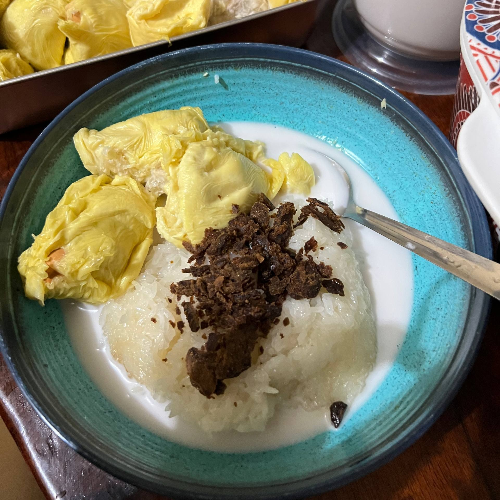

A must-try if you stop by here! The food here is all delicious since it's Thai cuisine. My favourite dish is called miang pla. Their food never disappoints.

Favourite dessert to cool down the throat!" A combination of finely shaved ice like snow with sweet and fresh mango slices. Always manages to turn my tiring day into a cheerful one again

The special and most favourite dish cooked especially by my Ummi! A combination of soft glutinous rice, rich coconut milk sauce, topped with sweet and thick durian flesh. For me, there's no other durian sticky rice that can match Ummi's own cooking! ❤️